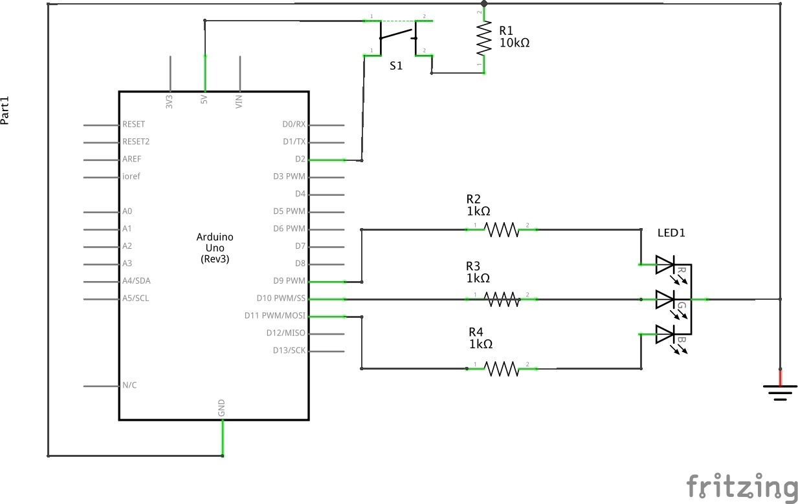
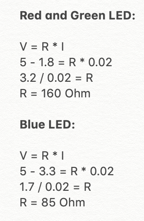
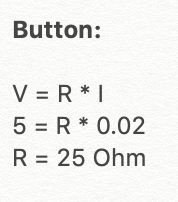
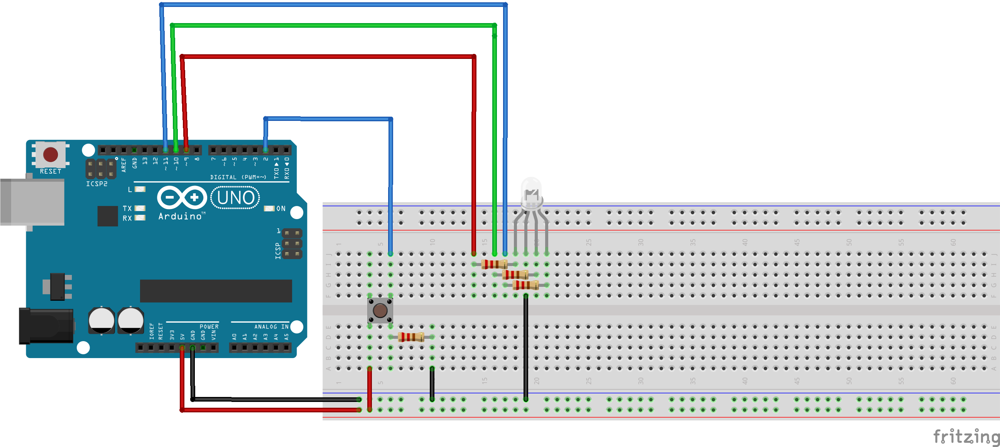

Monina's Assignment 2!
The schema of the circuit. 1k resistors were used for the LED's as that was more than enough resistance for the calculated number of Ohm's, even if they made the LED's slightly dimmer because of the higher resistance.

A 10k resistor was used for the button because a resistor is needed in order to not send a direct current to ground when the button is pressed, which could damage the Arduino. In my calculation, only a 25 Ohm resistor is needed but I used a 10k resistor as it work just as well.

An image of the circuit

A gif of the circuits operation.
The code snippet
// declares pin 2 as the button
const int button = 2;
// declares pin 9 as the red LED
const int R = 9;
// declares pin 10 as the green LED
const int G = 10;
// dec;ares pin 11 as the blue LED
const int B = 11;
// declares the initial buttonState as a temporary variable
int buttonState = 0;
void setup() {
// put your setup code here, to run once:
// initializes the button as an input
pinMode (button, INPUT);
// initializes the red LED as an output
pinMode (R, OUTPUT);
// initializes the blue LED as an output
pinMode (B, OUTPUT);
// initializes the green LED as an output
pinMode (G, OUTPUT);
}
void loop() {
// put your main code here, to run repeatedly:
//reads if the button is high or low (pressed or not pressed) and stores it into a variable
buttonState = digitalRead(button);
if (buttonState == HIGH) { // if the button is pressed
// starting at value 0, increment the current value by 1 until the value 256
for(int i = 0; i < 256;i++){
// initiliaze the red LED to the current value
analogWrite(R, i);
// wait a moment
delay(10);
}
// starting at value 0, increment the current value by 1 until the value 256
for(int i = 0; i < 256;i++){
// initiliaze the green LED to the current value
analogWrite(G, i);
// wait a moment
delay(10);
}
// starting at value 0, increment the current value by 1 until the value 256
for(int i = 0; i < 256;i++){
// initiliaze the blue LED to the current value
analogWrite(B, i);
// wait a moment
delay(10);
}
} else { // if the button is not pressed
// turn the red LED off
digitalWrite(R,LOW);
// turn the green LED off
digitalWrite(G,LOW);
// turn the green LED off
digitalWrite(B,LOW);
}
}